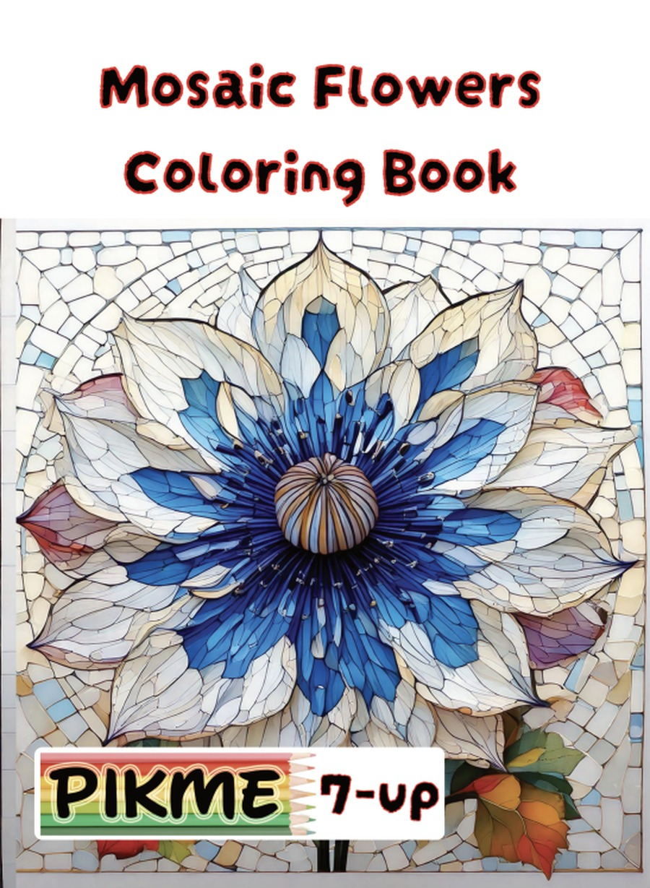
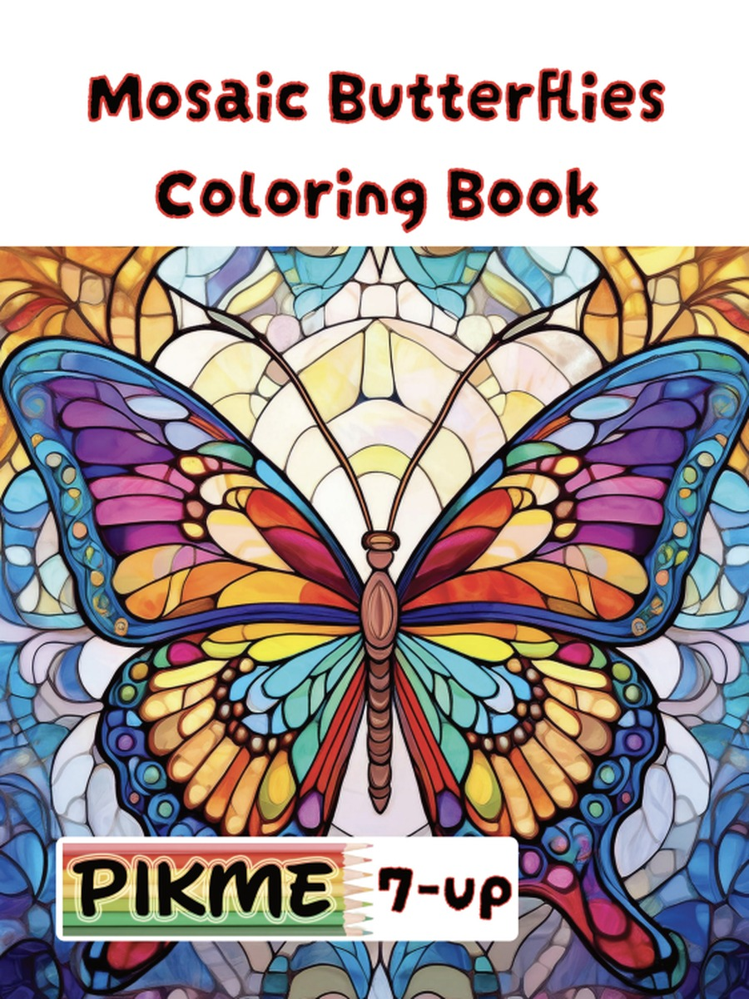
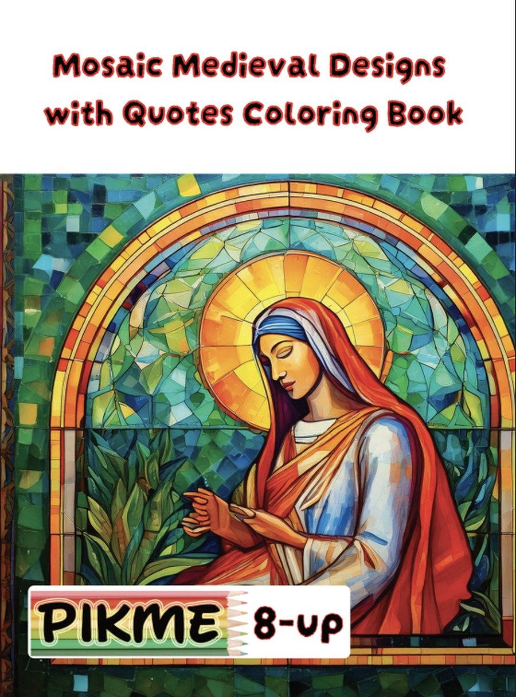
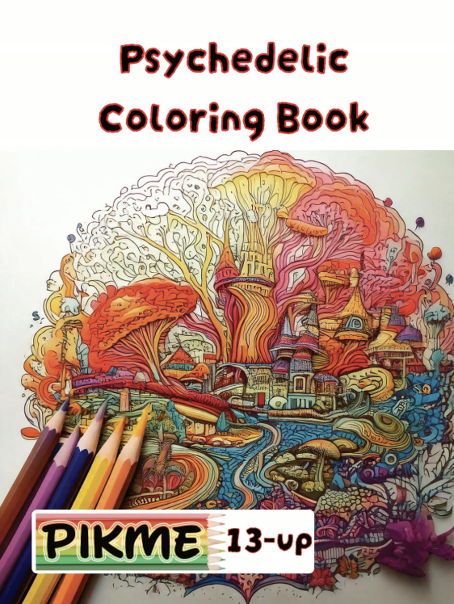
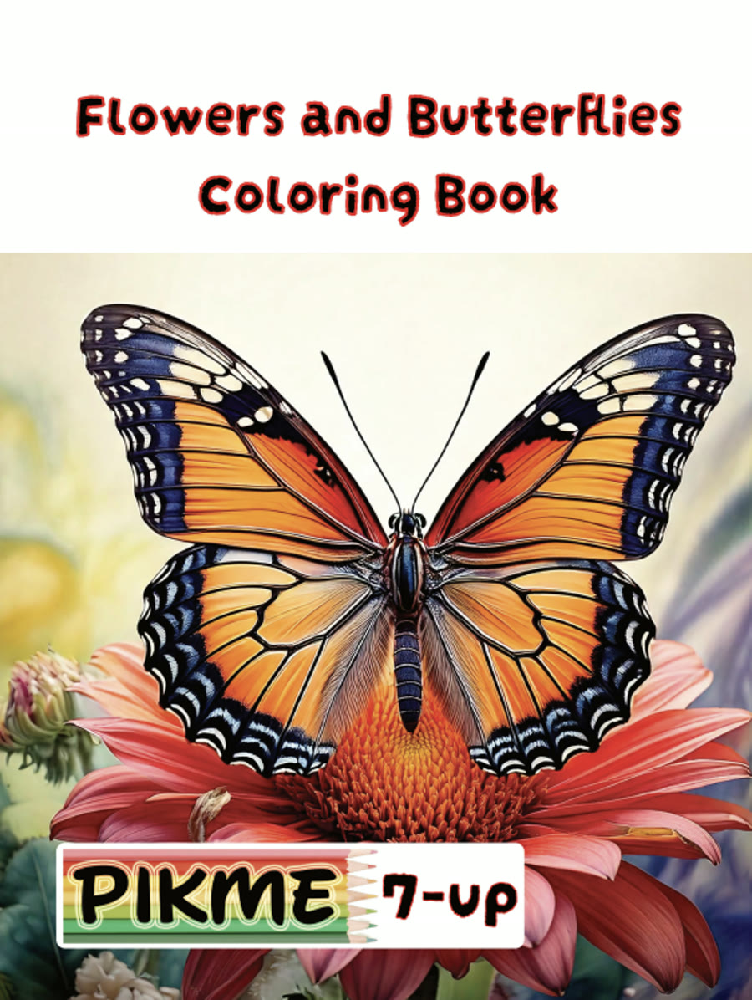

Patterned mosaic and flowing designs that give focused hands a calm, repeatable rhythm.
A wide-open page can feel like too many decisions at once. Some children and adults settle more easily when the page already has structure to follow.
Mosaic pages break a picture into small, clearly outlined sections. Coloring one section, then the next, gives the session a clear rhythm, an easy place to pause, and a simple way to see progress.
Look for clean cell boundaries, sections of a similar size, and a page count that suits how long your sessions usually last. The free 3-page sampler on each book page is a low-pressure way to test the pattern size.
Every title below is a real, live coloring book in our catalog — picked for this theme, not written for it.

Quiet, patterned mosaic-flower designs that give focused hands a calm, repeatable rhythm.
View Coloring Book
Patterned mosaic butterfly designs for a slow, repeatable coloring rhythm.
View Coloring BookPatterned mosaic church scenes for a slow, meditative coloring rhythm.
View Coloring Book
Patterned mosaic scenes paired with gentle words for quiet, focused coloring.
View Coloring Book
Flowing, patterned designs for a slow, meditative kind of focus.
View Coloring Book
Soft floral and butterfly scenes for a calm, unhurried coloring session.
View Coloring Book